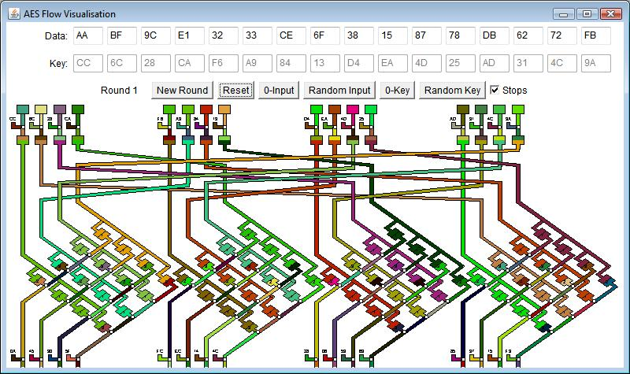

The AES flow visualization uses a colorful display to show how data changes in each round of the AES encryption algorithm. This is shown using the example of AES128 with 10 rounds, where data as well as the key consist of a 16 byte block (128 bits) each.
Every byte of the 16 byte block is illustrated by a color stream, whereas the color reflects the current value (through direct derivation of the RGB values from the numerical values of the bytes - see http://en.wikipedia.org/wiki/RGB_color_model). This way you can easily see that a data block consisting of zeros only will turn "colored" very fast, even though the key consists of zeros only, too.

Usage:
You can enter each byte manually - this is applies to both, the data block as well as the key block.
The buttons underneath allow to fill the data and the key block with either zeros or random hex values. The Reset button restarts the algorithm in the first round using the current hex values.
By clicking the Calculation button (on the far left) you can start the visualization in the lower section. Therein you can see one round of AES at a time (unfortunately, you cannot scroll through all 10 rounds at the moment, the current implementation can display and save only one round).
With the check box Stops (on the far right) you can configure how autonomously the visualization is executed:
The steps visualized in each round are:
A detailed description of each step as well as further documentation can be found here: